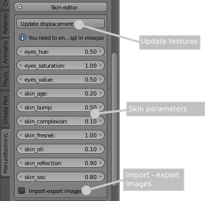
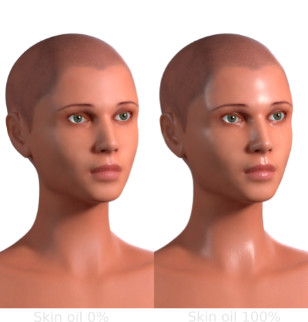
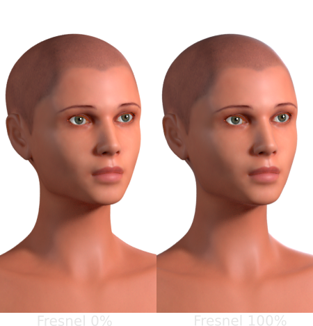
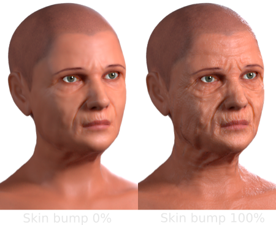
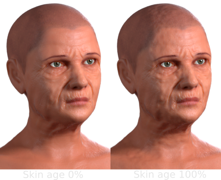
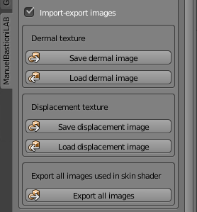

Define the skin and textures
From version 1.3.0, ManuelbastioniLAB provides a poweful skin editor.
Behind the simple interface there is a set of complex shaders for human skin, human eyes, toon skin and toon eyes. These shaders are developed in order to simulate the variety of skin tones and work under any lighting condition:
- An advanced human skin shader
- An advanced toon skin shader
- Shaders for eyes
Skin editor
The skin editor is visually divided in three parts:
- Bump/displacement controls
- Parameters editor
- Save textures controls

Bump/displacement controls
The button "Update displacement" is the gui for the displacement system, an algorithm that automatically creates the bump map from the values of age, mass and tone parameters. For example, an older character will have more wrinkles, while a muscled character will have more noticeable veins.
You should use this button to update the bump/displacement each time you change the meta parameters. Note that to see these changes in realtime, you need to enable some display options.
Each time the button "Update displacement" is pressed, the system recalculates the displacement map using the values of meta parameters. This map can be saved with the "Save displacement image" button, in order to be usable in external engines or in finalized characters.
Note: Using Cycles in realtime, sometime the viewport is not updated with the recalculated bump.
Parameters editor
The parameters editor is composed by an intuivive set of sliders for easily modify the values of skin complexion, skin bump, skin oil, skin saturation, skin subsurface scattering and more. The editor also provides controls for the eyes hue, tone and saturation.
Skin complexion
One of most important parameters is the complexion. It modifies the color in order to vary from very light skin to very dark one. It's not just the brightness, but a complex result obtained using the samples from an image included in the lab data.

Skin oil
Another important factor is the amount of the oil layer. It's a thin layer that protects the skin, more noticeable in some body parts and almost invisible in others. In lab 1.3 it's assumed an uniform distribution of the oil. More accurate controls will be added in future releases.

Skin fresnel
The fresnel reflection is usually very noticeable in the skin, in particular when the direction of the light is well defined.

Skin bump
This parameter controls the amount of the skin bump. It doesn't affect the true displacement of the subdivided mesh, but only the visual bump effect calculated at render time.

Skin age
The skin age adds a parametric noise to the skin bump. It's designed to create extra details and skin imperfections, in order to have a more natural skin effect. It's particularly useful in cases of older characters, where the bump is more noticeable.

Save textures controls

Checking the "Import-export images", the panel will show the controls to load custom textures or save the textures generated with the lab (for example the displacement texture).
Note: the textures can be also saved during the finalization of the character.